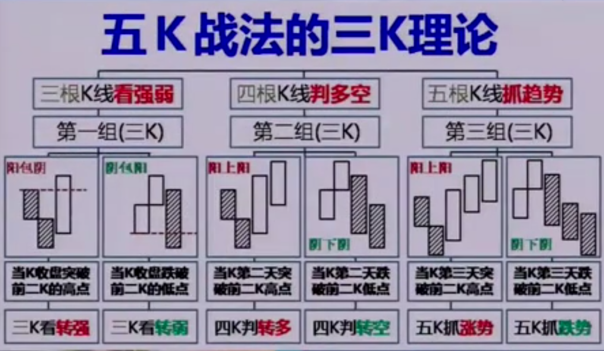
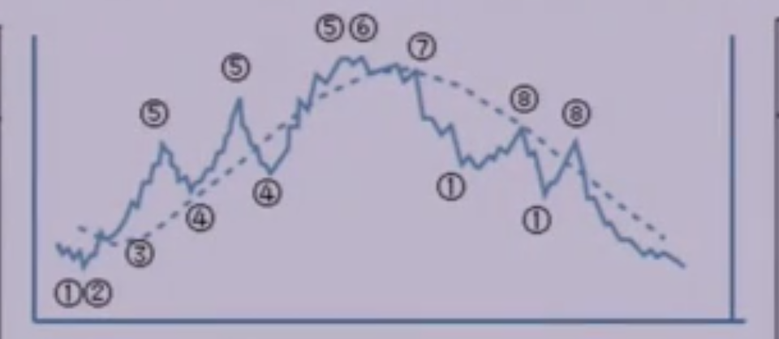

如下图所示为三K理论的介绍：
转强之后转多，继续阳上阳表现为涨势；
转弱之后转空，继续阴下阴表现为跌势；
转强之后转多失败，或是转多成功但之后阴包阳低表示止涨；
转弱之后转空失败，或是转空成功但之后阳包阴表示止跌；
葛兰碧八大交易法则，是利用价格与其移动平均线的关系作为买进与卖出讯号的依据。 其认为价格的波动具有某种规律，但移动平均则代表着趋势的方向。 因此，如果价格波动偏离趋势（即价格与移动平均的偏离）， 那么未来将会朝趋势方向修正，所以发生偏离时，是一个买卖讯号。
目前价格与均线的差距称为乖离(bias)，bias=股价-MA，其中MA为移动平均(moving average)。 当乖离越大时，价格修正的可能性就越高。因此乖离是一个有用的观察指标。 另一方面，移动平均线是较长期的价格发展线，因此相较于价格线而言，移动平均线具有一种趋势的概念， 且平均的日期越大，所代表的时间刻度就越大。但当趋势发生改变时，趋势线还没有感受到时， 价格将会先反应，在这个时候，价格线将与移动平均线发生交叉现象，代表着趋势改变的含义， 因此价格与均线的关系也是很有用的观察指标。葛兰碧八大交易法则，就是综合利用上述观察指标的原理， 归纳出买进卖出讯号。
本策略利用其中两个原则：
1：价格突然暴跌，跌破平均线，且远离平均线，则有可能反弹上升，为买进信号
2：价格突然暴涨，突破平均线，且远离平均线，则有可能反弹会跌，为卖出信号
如下图所示，位置1表示线下负乖离买止跌，位置5表示线上正乖离空止涨，虚线为移动平均线：
综上，策略结合了三K理论与葛兰碧八大法则的内容，策略的主要标准如下：
标准1：均线趋势向上的背景下买进，在正乖离过大的位置卖出
标准2：利用均线趋势向下的背景里的负乖离买反弹，在接近向下均线的位置卖出